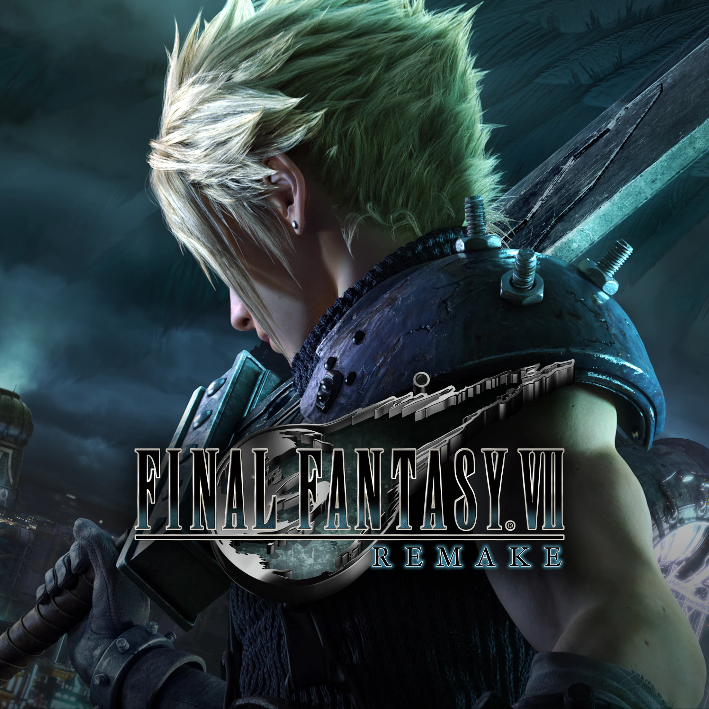

Sobre PlayStation
Comúnmente abreviado como PS, es el nombre de una serie de consolas de videojuegos creadas y desarrolladas por Sony Interactive Entertainment. Han estado presentes en la quinta, sexta, séptima, octava y novena generación de videoconsolas; la compañía promotora está actualmente en el mercado con su PlayStation 5.
A continuación encontrarás 5 juegos que no puedes perderte si tienes una PlayStation.
Juegos recomendados
Elden Ring
Rol / AcciónElden Ring es un juego de rol y acción desarrollado por FromSoftware. Es conocido por su mundo abierto, su dificultad desafiante y su narrativa profunda. Los jugadores exploran un vasto mundo lleno de secretos, enfrentándose a enemigos poderosos y jefes épicos. Con una jugabilidad fluida y una atmósfera envolvente, Elden Ring se ha convertido en uno de los títulos más aclamados de la generación.
Ver en PlayStation Store

God of War: Ragnarök
Rol / AcciónLa épica conclusión de la saga de Kratos. En esta entrega, el guerrero espartano se enfrenta a los dioses nórdicos en una historia cargada de emoción, acción y momentos inolvidables. Con un sistema de combate mejorado, gráficos impresionantes y una narrativa que profundiza en la relación entre padre e hijo, God of War: Ragnarök es una experiencia imprescindible para los fans de la serie y los amantes de las aventuras épicas.
Ver en PlayStation Store

The Witcher 3: Wild Hunt
Rol / AventuraUn juego de rol de acción en un mundo abierto lleno de historia, personajes memorables y decisiones que afectan el destino del mundo. En esta entrega, Geralt de Rivia recorre vastos paisajes en busca de su hija adoptiva, enfrentándose a monstruos, intrigas políticas y dilemas morales sin respuestas fáciles. Con una narrativa profunda, un sistema de combate satisfactorio y cientos de horas de contenido, The Witcher 3 es considerado uno de los mejores juegos de rol de la historia y una experiencia imprescindible para los amantes del género.
Ver en PlayStation Store

Final Fantasy VII Remake
RPG / AcciónUn remake del clásico juego de rol de 1997, con gráficos completamente renovados y una jugabilidad actualizada que combina lo mejor del original con mecánicas modernas de acción en tiempo real. Sumérgete en el oscuro y vibrante mundo de Midgar, una megalópolis controlada por la megacorporación Shinra, y vive la historia épica de Cloud Strife y sus compañeros mientras luchan por salvar el planeta. Con una banda sonora icónica, personajes profundamente desarrollados y momentos cinematográficos inolvidables, Final Fantasy VII Remake es una experiencia imprescindible tanto para los fans del original como para los amantes de los RPG de alta calidad.
Ver en PlayStation Store

The Last of Us Part 2 Remastered
Aventura / AcciónLa remasterización de uno de los juegos más aclamados de su generación, ahora con gráficos mejorados, tiempos de carga reducidos y una jugabilidad optimizada que aprovecha al máximo el hardware de PlayStation 5. The Last of Us Part 2 ofrece una experiencia emocionalmente intensa y visualmente impresionante que redefine los límites de la narrativa en los videojuegos. Sigue la historia de Ellie mientras navega por un devastado mundo postapocalíptico lleno de peligros, criaturas infectadas y decisiones morales que no tienen respuestas fáciles. Con una actuación magistral, un diseño de sonido excepcional y una historia que desafía las convenciones del medio, esta remasterización es imprescindible para los fans de las aventuras narrativas.
Ver en PlayStation Store

Resumen de juegos
| Juego | Género | Jugadores | Nota |
|---|---|---|---|
| Elden Ring | Rol / Acción | 1 | 9.64/10 |
| God of War: Ragnarök | Rol / Acción | 1 | 9.51/10 |
| The Witcher 3: Wild Hunt | Rol / Aventura | 1 | 9.47/10 |
| Final Fantasy VII Remake | RPG / Acción | 1 | 9.31/10 |
| The Last of Us Part 2 Remastered | Aventura / Acción | 1 | 9.07/10 |